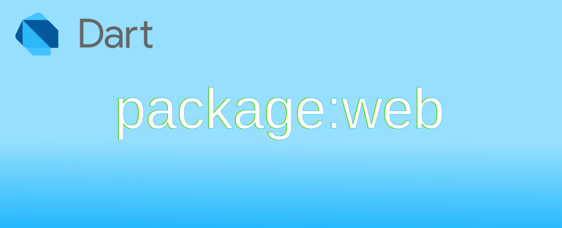

Dart: ว่าด้วย Web API ที่จะใช้กับ package:web เบื้องต้น

ตัว web เป็น package ที่รวบรวม Web API ต่าง ๆ ที่ทำงานผ่าน JavaScript โดยตัว webdev ถูกสร้างโดยอ้างอิงจาก Web IDL และไม่มี overhead ในการเชื่อมต่อระหว่าง Dart และ JavaScript ดังนั้นประโยชน์หลัก ๆ ในการใช้งาน web คือ การเรียก Web API เพื่อสื่อสารกับเว็บเบราเซอร์ เลยจะมาบันทึก API ที่น่าจะใช้บ่อย ๆ
อ่านค่า URL
ค่า URL ที่ใช้เรียกตัวเว็บ จะสามารถใช้ Uri class เพื่อประมวลผลแยกส่วนต่าง ๆ ออกมาได้
อ่านค่า URL ของตัวเอกสาร
import 'package:web/web.dart' as web;
void main() {
Uri url = Uri.parse(web.document.URL);
url.queryParameters.forEach((key, value) => print("$key: $value"));
}
ลองใส่ ?hello=test&demo=1
อ่านค่า URL ของ referrer ที่ลิงก์ไปยังปัจจุบัน
วิธีการตรวจสอบ referrer ว่าลิงก์มาจากไหน สามารถใช้คำสั่ง document.referrer คืนมาเป็น String ของ URI ที่เป็นตัวลิงก์มาได้
import 'package:web/web.dart' as web;
void main() {
Uri? referrer = Uri.tryParse(web.document.referrer);
if (referrer == null) {
print('invalid referrer');
} else {
print(referrer);
}
}
อ่านและแก้ไข Title
Title ของเว็บเพจ สามารถอ่านและแก้ไขค่าได้ด้วยคำสั่ง document.title
import 'package:web/web.dart' as web;
void main() {
String pageTitle;
pageTitle = web.document.title;
print('old title is "$pageTitle"');
pageTitle = 'happy web api';
web.document.title = pageTitle;
print('new title is "$pageTitle"');
}
ลองเปลี่ยน Title ของ webpage
Document: querySelector() เลือก DOM element ด้วย CSS selectors
เป็นคำสั่งที่ช่วยในการเลือก element ที่ตรงกับที่ระบุ ผ่าน CSS selectors
เลือกแค่ element ที่ตรงกับเงื่อนไข อันแรกที่เจอ .querySelector()
ตัวอย่าง หากต้องการเลือก <div id="output"></div> เพื่อแก้ไขข้อความ สามารถเขียนคำสั่ง document.querySelector() ดังนี้
import 'package:web/web.dart' as web;
void main() {
web.Element? div1 = web.document.querySelector("div#output");
div1?.textContent = "this is match element";
}
ผลการแก้ไข div
เลือกทุก element ที่ตรงกับเงื่อนไข อันแรกที่เจอ .querySelectorAll()
การทำงานจะเหมือนกับ document.querySelector() แต่
document.querySelectorAll() จะคืนค่ามาเป็น NodeList
ตัวอย่าง หากต้องการเลือก <div> ทุกอันใน document สามารถทำได้ดังนี้
import 'package:web/web.dart' as web;
void main() {
web.NodeList divs = web.document.querySelectorAll("div");
print("found div element = ${divs.length}");
for (var i = 0; i < divs.length; i++) {
divs.item(i)?.textContent = "This is div number $i";
}
}
มี <div> จำนวน 3 โหนด
การเขียน CSS selectors
ตัว CSS selectors มีหลาย levels จากที่หาข้อมูล level 3 รองรับที่เว็บเบราเซอร์ในแล้ว วิธีการเขียนมีสอนเขียน CSS selectors เลือกที่น่าสนใจและใช้งานบ่อย ๆ
- เลือก html tag ให้ระบุชื่อ tag ได้โดยตรงในตัวเลือก เช่น
h1h2pdiv - เลือก class ให้ใช้
.นำหน้าชื่อ class เช่น<xxx class="demo1>ถ้าไม่สนใจ tag ตัวเลือกคือ.demo1<div class="demo1>ถ้าสนใจว่าเป็น div เท่านั้น ตัวเลือกคือdiv.demo1<xxx class="a b c">ถ้าต้องการ tag ที่มีหลาย class ตัวเลือกคือ.a.b.cสามารถสลับตำแหน่งได้
- เลือก id ใช้
#<xxx id="xx">ถ้าไม่สนใจ tag ตัวเลือกคือ#xx<div id="xx">ถ้าสนใจว่าเป็น div เท่านั้น ตัวเลือกคือdiv#xx
- ใช้
,เพื่อเลือกเกิน 1 เงื่อนไข เช่นh1,h2,h3จะตรงกับ html tag → h1 h2 h3 ที่อยู่ใน document - ใช้
>เพื่อเลือกตัวลูกที่อยู่ในลำดับถัดไป เช่น<div><p>1</p><div><p>2</p></div></div>ถ้าเขียนตัวเลือกdiv > pจะเลือก<p>1</p> - ใช้
<div id="x"><div><p>1</p></div></div><p>2</p>ถ้าเขียนตัวเลือกdiv#x pจะเลือก<p>1</p>ที่อยู่ใน div เท่านั้น โดยไม่สนใจลำดับความลึก - ใช้
+เพื่อเลือกตัวที่อยู่ระดับเดียวกันและอยู่ติดกัน เช่น<p class="a"></p><p class="b"></p><p class="c"></p>- ถ้าเขียน
.a + .bจะเลือก<p class="b"></p> - ถ้าเขียน
.a + .cจะไม่เลือก ❌ เพราะ<p class="c"></p>ไม่ได้อยู่ติดกับ<p class="a"></p>
- ถ้าเขียน
- ใช้
~เพื่อเลือกตัวที่อยู่ระดับเดียวกันและอยู่ถัดไป เช่น<p class="a"></p><p class="b"></p><p class="c"></p>ถ้าเขียน.a ~ .cจะเลือก<p class="c"></p>ได้ เพราะอยู่ในระดับเดียวกันแม้จะได้อยู่ติดกันก็ตาม - ใช้
:not()แทนนิเสธ เช่น<p class="a"></p><p class="b"></p><p></p>ถ้าเขียน:not(.a)จะได้<p class="b"></p>และ<p></p> - ใช้
:emptyเลือก tag ที่ไม่มีข้อมูลข้างใน เช่น<p></p><p>a</p><div></div>- ถ้าเขียน
:emptyจะได้<p></p>และ<div></div> - ถ้าเขียน
p:emptyจะได้<p></p>
- ถ้าเขียน
หากต้องการทดสอบเขียน CSS ที่ต้องการ สามารถ developer tool ของ Chrome ได้
ลองเพิ่ม CSS เพื่อเปลี่ยนสีของ div ตัวแรกดู
การอ่านและเขียน cookie
cookie เป็นข้อมูลขนาดเล็กใช้สำหรับเก็บข้อมูลระหว่างใช้งานบนเว็บนั้น ๆ โดยจะมีการส่ง cookie ออกไปที่เซิร์ฟเวอร์ทุกครั้งที่มีการสร้าง request การเข้าถึง cookie ใช้คำสั่ง document.cookie
import 'package:web/web.dart' as web;
void main() {
// write cookie
// format: key=value;expires=[date];path=[/path/to/store/cookie];
web.document.cookie = 'firstname=John;expires=Wed, 18 Dec 2026 12:00:00 GMT';
web.document.cookie = 'lastname=Smith;expires=Wed, 18 Dec 2026 12:00:00 GMT';
// get all cookie
var allCookie = web.document.cookie;
print("current cookie: $allCookie"); // output → current cookie: firstname=John; lastname=Smith
// delete cookie for firstname
web.document.cookie = 'firstname=;expires=Wed, 01 Jan 1970 12:00:00 GMT';
// display remain cookie
allCookie = web.document.cookie;
print("current cookie: $allCookie"); // output → current cookie: lastname=Smith
}
การเก็บข้อมูลที่ใช้งานลงใน localStorage
คำสั่ง window.localStorage จะใช้สำหรับเข้าถึง Storage object ที่ใช้สำหรับเก็บข้อมูลในฝั่ง client โดยจะเก็บลงในเว็บเบราเซอร์แบบ key-value pair ข้อมูลที่เก็บจะรับเฉพาะ String และเข้ารหัสแบบ UTF-8
import 'package:web/web.dart' as web;
void main() {
web.Storage storage = web.window.localStorage;
print("Storage length: ${storage.length}"); // output → Storage length: 0
// add data
storage.setItem('font-size', '14');
storage.setItem('theme', 'dark');
print("Storage length: ${storage.length}"); // output → Storage length: 2
// read data
String? selectTheme = storage.getItem('theme');
print("Current theme: $selectTheme"); // output → Current theme: dark
// clear all data
storage.clear();
print("Storage length: ${storage.length}"); // output → Storage length: 0
}
ในกรณีที่ต้องการจะเก็บข้อมูลแค่ชั่วคราว เมื่อปิดเบราเซอร์แล้วให้ลบทิ้ง ให้บันทึกลง window.sessionStorage แทน

ข้อมูลที่เก็บใน localStorage และ sessionStorage ไม่ควรเป็นข้อมูลที่มีความอ่อนไหว เช่น password, encrypt key, session token เนื่องจากสามารถใช้ Developer tools เขียนคำสั่งอ่านข้อมูลได้ตลอดเวลา และการใช้งานต้องตรวจสอบความถูกต้องก่อนทุกครั้ง ให้คำนึงเสมอว่าเป็นข้อมูลที่อาจถูกแทรกแซงได้เสมอ และขนาดพื้นที่สูงสุดที่สามารถเก็บข้อมูลทั้งหมดได้ประมาณ 5MB เท่านั้น
การเก็บข้อมูลที่ใช้งานลงใน IndexedDB
หากต้องการเก็บที่เป็นข้อมูลอย่างอื่นที่ไม่ใช่แค่ String หรือมีขนาดใหญ่เกินกว่า 5 MB IndexedDB เป็นขั้นกว่าของ localStorage การทำงานจะเหมือนพวกฐานข้อมูลแบบ NoSQL มันสามารถใส่ Object ที่ต้องการได้เลย การเข้าถึง API สามารถเรียกผ่านคำสั่ง window.indexedDB หากเบราเซอร์รองรับจะได้ IDBFactory กลับมา
สอนวิธีการใช้ IndexedDB: Work with IndexedDB จาก web.dev
เนื่องจากตัว มีคำแนะนำ migration ในการย้ายไปใช้ web package ค่อนข้างจำกัด และไม่มีตัวอย่างการใช้งานกับ IndexedDB โดยตรง ณ ปัจจุบัน การใช้ dart:indexed_db น่าจะเป็นทางออกที่ดีกว่า รอจนกว่าเอกสารและตัวอย่างมากกว่านี้ค่อย migration ไป web package
การใช้งาน Cache
ตัว Cache ช่วยให้เว็บแอปสามารถดึงข้อมูลมาเก็บไว้ที่เบราเซอร์แบบ offline ได้ เบราเซอร์ตั้งแต่ปี ค.ศ.2017 เป็นต้นมารองรับหมดแล้ว
ตัวอย่าง ไฟล์ offline.txt เป็นข้อมูลที่จะดึงมาเก็บไว้ใน Cache ชื่อ offline-cache ในการใช้งานในชีวิตจริง จะใช้กับคำสั่ง [window.fetch()](https://pub.dev/documentation/web/latest/web/Window/fetch.html) หากเกิดปัญหาไม่สามารถติดต่อกับเซิร์ฟเวอร์ได้ ก็จะได้ไปเลือกข้อมูลใน Cache ที่เก็บไว้มาใช้งานแทนเป็นต้น
import 'dart:js_interop';
import 'package:web/web.dart' as web;
void main() async {
web.Cache cache = await web.window.caches.open('offline-cache').toDart;
cache.add(web.Request('/offline.txt'.toJS)).toDart.then((_) {
print('offline.txt cached');
}, onError: (e) {
print('Error $e');
});
}
เขียนคำสั่งอ่าน offline.txt มาไว้ใน Cache